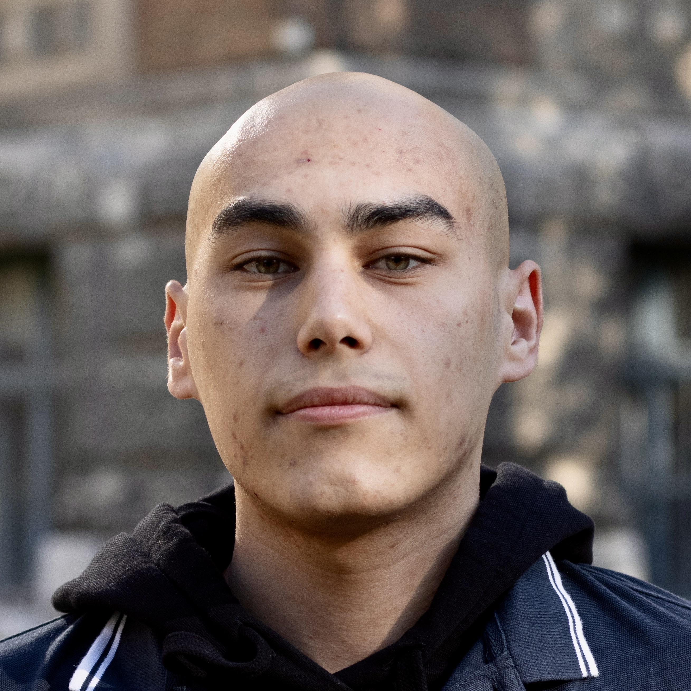

Who I Am

I'm Jaloliddin Ismailov, a computer science student at ELTE in Budapest, originally from Uzbekistan. I build embedded systems, mapping projects, and climate-oriented experiments that connect software to the physical world.
My work blends low-level engineering with human-centred design: hardware-software integration, CAN bus experiments, Raspberry Pi mapping projects, and infrastructure-focused prototypes. I prefer projects that feel tangible, exploratory, and handcrafted rather than purely optimised for career signalling.
Outside engineering I photograph urban details, collect ideas in notebooks, and make small side projects that keep engineering playful and curious.
Get in TouchSkills & Tools
Deep focus on embedded systems, climate technology, and mapping systems — combining low-level C/C++ engineering with GIS, sensor integration, and real-world infrastructure applications.
Tools & Environment

Primary Tools: VSCode, Git/GitHub, GCC toolchain, FreeRTOS SDK, QEMU, STM32CubeIDE
Languages: C, C++, Python, Java, Bash, SQL
Platforms & Frameworks: ESP32, ARM Cortex, Linux, FreeRTOS, CAN/UART protocols, GeoPandas, Rasterio
Experience & Education
View full experience & education history
| Period | Role / Qualification | Organisation | Type |
|---|---|---|---|
| 2022 – Present | Freelance Product Designer & Creative Director | Self-Employed, London | Freelance |
| 2020 – 2022 | Senior Product Designer | NovaCare Health, London | Full-Time |
| 2019 – 2020 | UI/UX Designer | Tide Design Consultancy, London | Full-Time |
| 2016 – 2019 | BA (Hons) Graphic Communication Design — First Class | University of the Arts London (UAL) | Education |
| Feb 2026 – Present | Embedded Systems Developer | BME Solar Boat Team, Budapest | Project |
| Apr 2026 | Team Lead (zakaz somsa) | CASSINI Hackathon (EU Space) | Award Project |
| Nov 2025 – Jan 2026 | Research Fellow (LHCb) | CERN, Geneva | Research |
| Sep 2025 – Jun 2028 | BSc Computer Science (GPA: 4.6/5.0) | ELTE, Budapest | Education |
| Feb – Aug 2025 | Software Engineering Track (C & ML) | 21 School, Tashkent | Intensive |